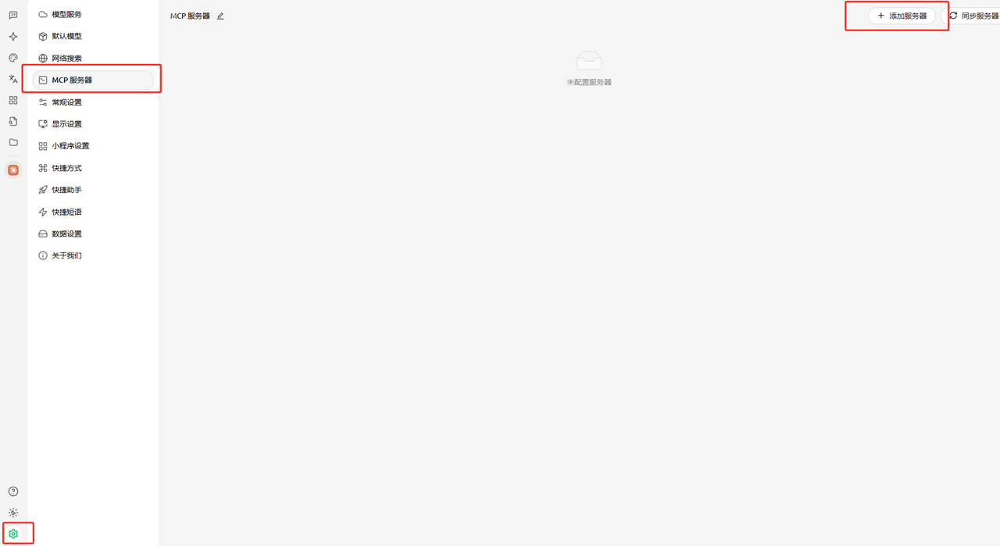
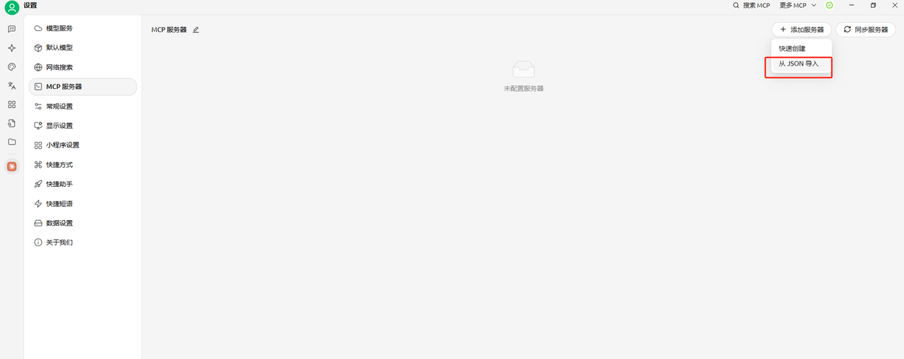
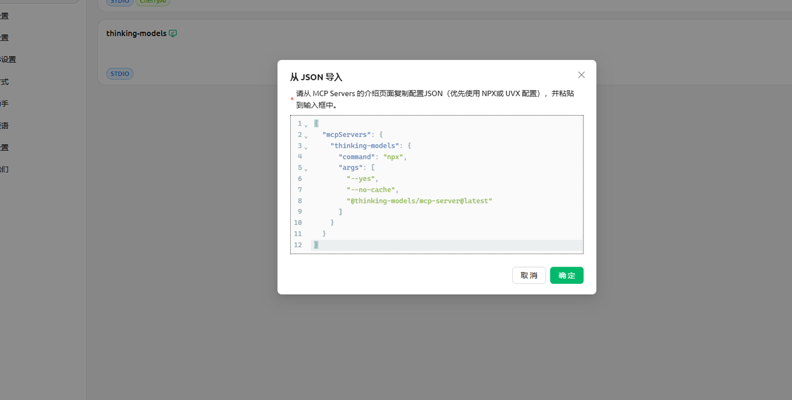
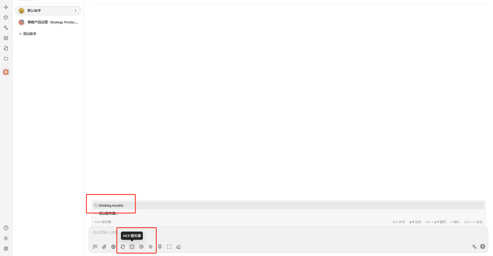

天机 · 思维模型
首页
设计理念
安装指南
快速安装
VS Code配置
Cursor配置
Claude配置
Trae配置
Cherry Studio配置
工具文档
工具概览
系统工具
问题解决
探索工具
创建工具
模型文档
模型总览
分类索引
搜索
Cherry Studio 环境配置
本文档详细说明如何在 Cherry Studio 集成开发环境中配置 MCP 服务器
配置流程
请确保您使用的是支持 MCP 的 Cherry Studio 版本。
访问服务器配置界面：
点击"添加服务器"按钮

导入服务器配置：
在配置方式中选择"JSON导入"选项

将预先准备的配置代码粘贴到指定区域

完成配置：
保存配置信息
返回主界面，新添加的 MCP 服务器将在服务器列表中显示
可以通过对话界面直接调用配置的服务器
